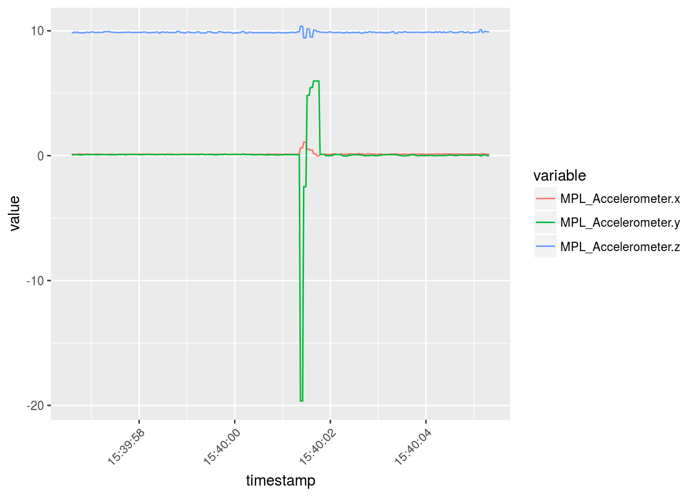

Getting started with HypeRIMU
Johannes Friedrich
2017-11-13
Motivation
Modern smartphones include a lot of sensors, e.g. for gravity or linear acceleration. Some apps provide the data collected from these sensors. One famous android app is “HyperIMU” (IMU: Inertial measurement unit). There are other apps available, but HyperIMU has some advantages:
- Choose which sensor data should be collected
- Choose different streaming protocols: SD-card (locally on the smarphone), UDP, or TCP
- The sampling rate can be adjusted
The R-package HypeRIMU provides some handy functions to visualise sensor data. Different streaming protocolls are supported (a local .csv file and TCP).
Usage
For using the smartphone app, see HIMUServer and HyperIMU Android and install the app on your smartphone.
Read sensor data
Until now two different methods to read the sensor data are supported: TCP and reading a local file.
TCP
The TCP protocol is also supported. Using this method needs to know your IP address to sumbit in the smartphone app, see HIMUServer.
data <- execute_TCP(port = 5555, timestamp = T)File
The recommended way to read the data is to save the records on your smartphone and submit them locally to your PC as a .csv file. The advantage from this method is the appropriation of sensor names.
The following code shows an example of using a local file. The file can be imported via the function execute_file(). If your data provide a timestamp, choose TRUE for the argument timestamp. The functions tries to guess if a timestamp is available even when you set the timestamp argument wrong.
When a timestamp is available in the file, the function changes the UNIX format to as POSIXct format.
library(HypeRIMU)
file <- system.file('extdata', 'short_y_impulse.csv', package = 'HypeRIMU')
data <- execute_file(file = file, timestamp = TRUE)Analyse sensor data
HypeRIMU provides a function to extract some specific sensor data, see next code. When a sumbitted sensorName is not available in the data, an error message is printed.
MPL_Accelerometer <- get_specificSensor(data, sensorName = "MPL_Accelerometer")
MPL_Linear_Acceleration <- get_specificSensor(data, sensorName = "MPL_Linear_Acceleration")Plot sensor data
Visulasing the data is one of the main advantages of this R-package. With some extra libraries a nice plot can be created in just a few lines. NOTE: It is recommended to use data with a timestamp.
library(ggplot2)
library(reshape2)
library(scales)
MPL_Linear_Acceleration_melt <- melt(MPL_Linear_Acceleration, id.vars = "timestamp")
ggplot(MPL_Linear_Acceleration_melt, aes(x = timestamp, y = value, color = variable)) +
geom_line() +
theme(axis.text.x = element_text(angle = 90, hjust = 1)) +
scale_x_datetime(labels = date_format("%H:%M:%S", tz = Sys.timezone()))
MPL_Accelerometer_melt <- melt(MPL_Accelerometer, id.vars = "timestamp")
ggplot(MPL_Accelerometer_melt, aes(x = timestamp, y = value, color = variable)) +
geom_line() +
theme(axis.text.x = element_text(angle = 90, hjust = 1)) +
scale_x_datetime(labels = date_format("%H:%M:%S", tz = Sys.timezone())) 